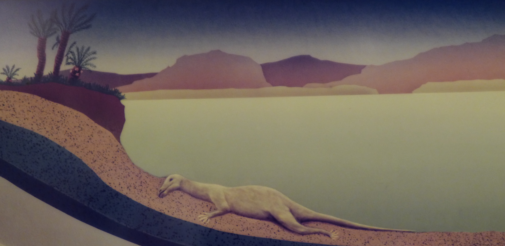
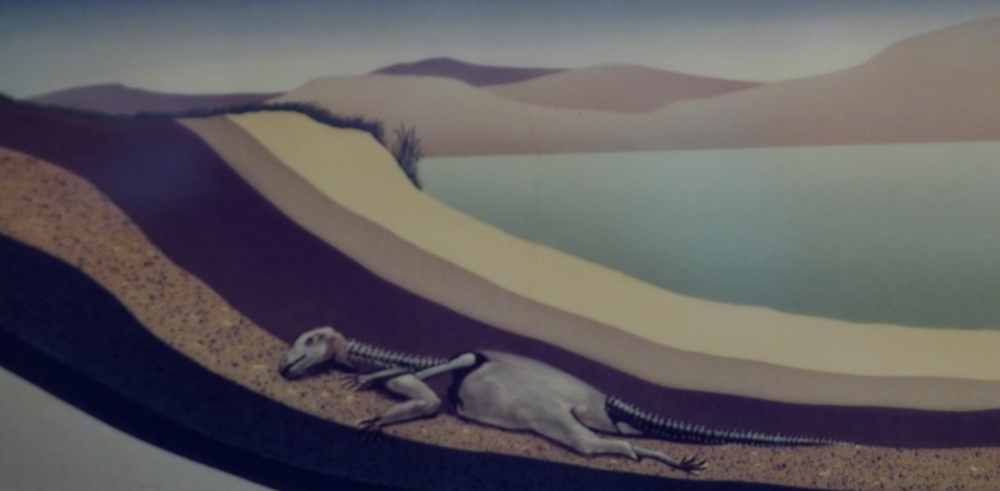
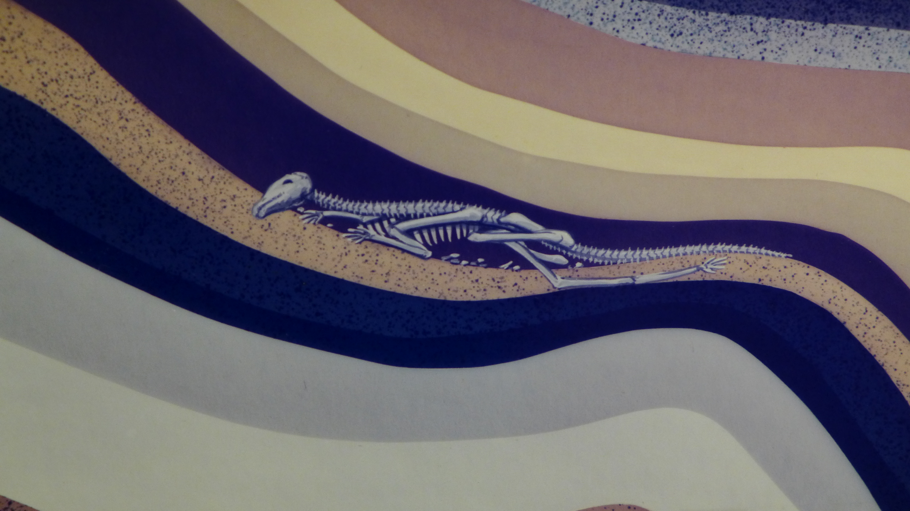
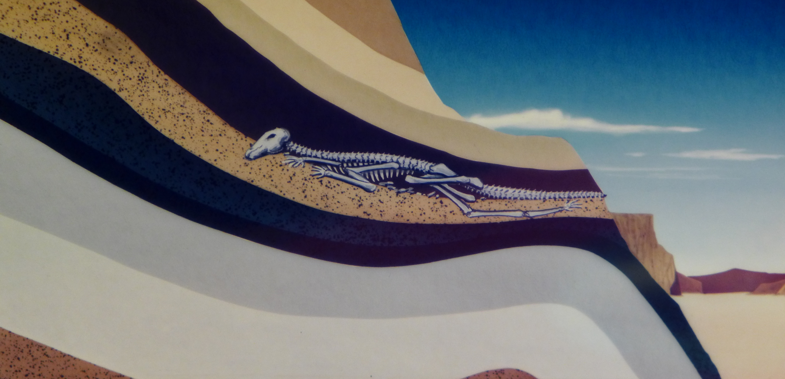

岩石中的紀錄
 化石是如何形成呢?
化石是如何形成呢?
化石形成的方式有很多種，大都是因沈積作用而形成的，其一般過程如下：
- 生物的遺體被就地掩埋，或被搬運至海、湖或河底等。 
- 遺體被泥沙快速的覆蓋。 
- 柔軟組織被吃掉或被細菌分解腐爛掉，堅硬的部分如果很幸運地沒有被分解或破壞，漸形成化石。 
- 地殼變動時，含有化石的岩層露出地表。 
在這個過程中，泥沙、生物體……等物質，慢慢堆積之後經壓力、溫度等作用，硬化形成岩石，這也就是碎屑沈積岩形成的過程。
自然界中，生物死後通常屍體都會因外力的破壞或細菌的作用而完全分解，身體較堅硬的部分，如骨骼或外殼也是一樣， 只是需要的時間較長，但因此它們也較有機會，因沉積作用或其他因素，形成化石被保存下來。
化石一定是在岩石中被保存下來嗎？
化石不一定是在岩石中被保存下來，在化石形成的過程中，包埋化石的物質叫「介質」， 化石絕大部分是經沉積作用在岩石中被保存的，此外，保存化石的介質還有：煤層、焦油（如：美國加州的焦油坑） 、琥珀、火山灰、冰層等。
 在什麼機會下，柔軟的葉子也會形成化石呢？！
在什麼機會下，柔軟的葉子也會形成化石呢？！
有時松脂一類的物質，碰巧會將昆蟲或其他小形動物，以及花粉等包埋在內，形成化石。如果各方條件配合得宜， 如生物的遺體或遺跡，未被破壞前就已被快速包埋，且包埋它的介質顆粒細密，不致磨損破壞它，同時化石形成過程環境穩定， 則柔軟如植物葉子、蚊蟲甚至水母的印痕，也可能形成化石。
當然這種情形非常難得。事實上，地史上曾經存在過的生物絕大部分都沒有形成化石。 我們由化石所認識古代的生物，也只是其中非常少的一小部分而已。
以下兩張是直接將泥沙覆蓋，而形成的化石：
劍鼻魚
懷俄明梧桐
以下不是直接將泥沙覆蓋，而形成的化石：

琥珀中的昆蟲
這個化石是保存在一塊如松脂類的物質形成的琥珀中。